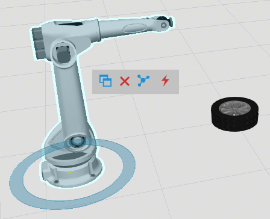
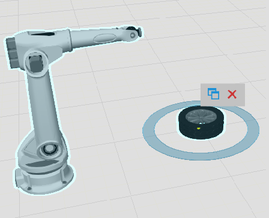
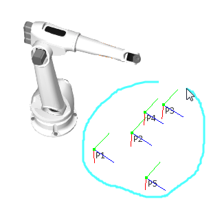
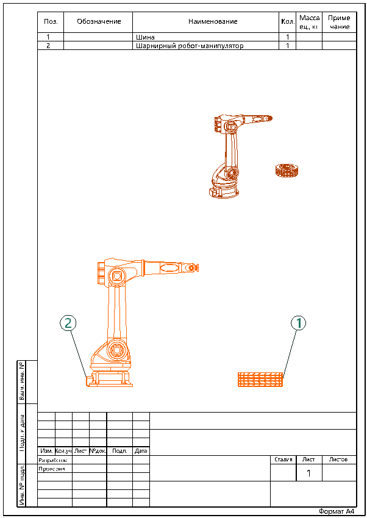
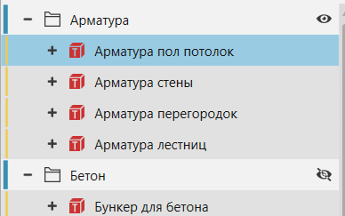
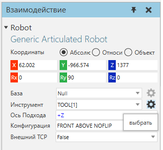
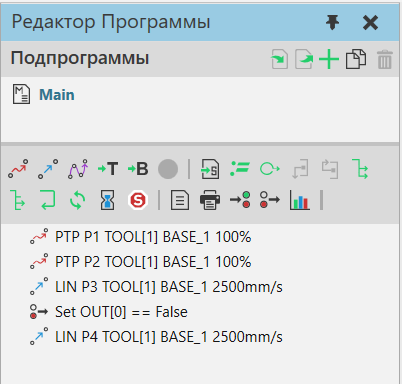
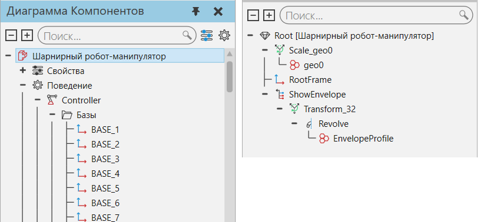

Вы можете выбирать объекты в трехмерном мире и в чертеже при помощи мыши и других инструментов.

Прямой выбор
Левая кнопка мыши (ЛКМ) напрямую выбирает объект на планировке.

Нажмите и удерживайте клавишу CTRL, чтобы добавить/удалить объект из текущего выбора.

Команды Выбора
Большинство вкладок на ленте представляют собой группу Действия, в которой есть набор команд для обозначения областей выбора с помощью левой кнопки мыши (ЛКМ) и косвенного выбора объектов.
Компоненты
На планировке вы можете выделять компоненты.

Роботы
В окне Робот вы можете выбирать позиции робота. Вы также можете использовать команду "Взаимодействие" для управления осями робота.

Элементы
В окне Моделирование вы можете выбирать элементы компонента.

Подсказка: Вы можете дважды щелкнуть на объект, чтобы выбрать его узел.

Элементы чертежа
В чертеже вы можете выбирать элементы, например, размеры, аннотации, компоненты и шаблоны чертежей.

Панели
Панели можно использовать для выбора объектов в зависимости от контекста планировки.
Компоненты
На планировке вы можете использовать панель Дерево построения для выбора компонентов.

Роботы
В окне Робот вы можете использовать команду и панель Взаимодействие для выбора робота и управлением его данными.

Вы также можете использовать панель Редактора программ для выбора движений в программе робота.

Моделирование
В окне Моделирование вы можете использовать панель Диаграммы компонентов для выбора узлов, свойств, поведения и элементов компонента.
